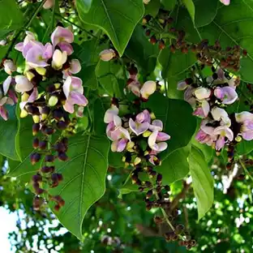

Karanj Tree (Pongamia pinnata)
Scientific Name: Pongamia pinnata
Description: The Karanj Tree, also known as Indian Beech, is a medium-sized, fast-growing deciduous tree native to the Indian subcontinent and Southeast Asia. It has a wide-spreading crown, glossy pinnate leaves, and small clusters of fragrant purplish flowers. The tree produces oil-rich seeds known as karanj seeds, which are widely used in traditional medicine and for biodiesel production. It also plays an important role in agroforestry and soil restoration due to its nitrogen-fixing ability.
Care Tips:
- Water: Requires moderate watering, especially during the early stages of growth. Once established, it is drought-tolerant.
- Light: Thrives in full sunlight. It requires at least 6 hours of direct sun daily for healthy growth.
- Temperature: Grows well in warm climates with temperatures ranging between 20°C to 35°C.
- Soil: Prefers well-drained loamy soil, but tolerates saline and degraded soils as well.
Medicinal Uses:
The Karanj Tree has various medicinal properties and is valued in traditional Ayurvedic and folk medicine. The oil extracted from its seeds is used externally to treat skin conditions like eczema, ulcers, and wounds. Its bark and leaves have anti-inflammatory and antimicrobial properties. Karanj oil is also applied for rheumatic pain and as a natural insect repellent. However, internal consumption should be guided by expert advice due to the potent nature of its compounds.